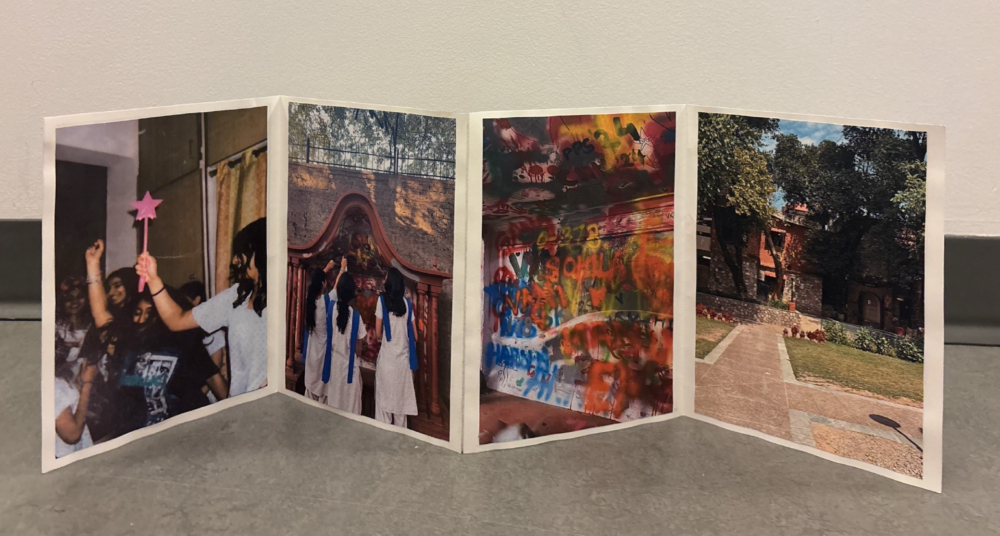
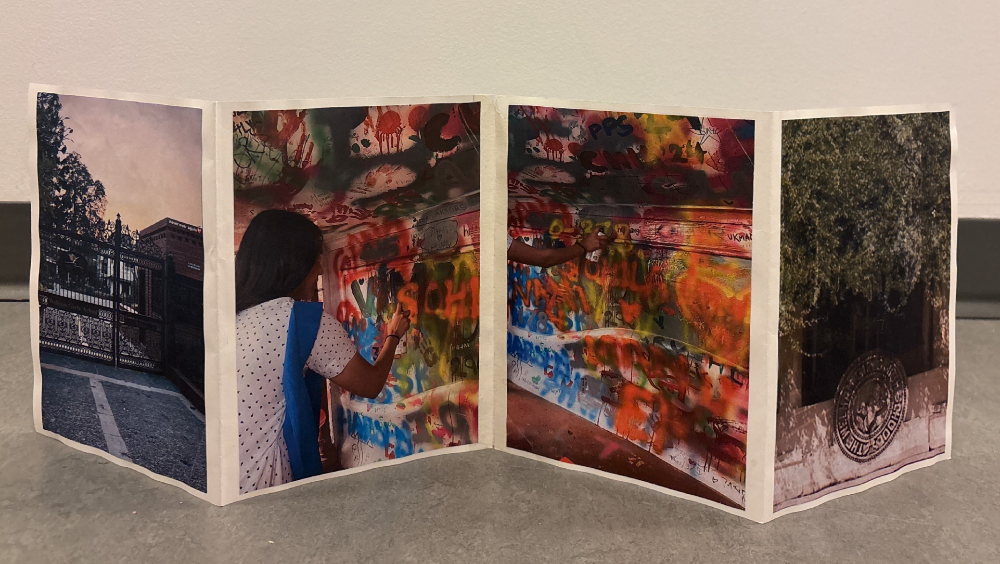

Short Film: Welham
A Chapter Etched in my Story
I created a short film about my school, Welham, as a way of holding on to the memories, friendships and moments that quietly shaped who I am. Through photographs and videos, the film captures the feeling of growing up in a place that will always feel like home.
Concept
Nestled in a small town in India, Welham is the place where I spent seven transformative years of my life. Through this short film, I revisit moments of laughter, quiet reflection and growth that shaped my everyday life within its walls. By weaving together photographs and video clips, the project captures how ordinary moments slowly turned into lasting memories before I even realized it. As I move forward, I carry with me the feeling of a place that will always remain a part of who I am.
Accordion Book
The accordion book acts as a physical continuation of the film, allowing moments from the story to be held rather than watched. By translating selected memories into a tactile format, the work preserves fleeting experiences in a form that feels intimate, personal and lasting.


Reflection
Working on this project reminded me that no matter how daunting the world ahead may seem, the memories I carry continue to ground me. As the gates of Welham fade into the distance, this process helped me hold onto the strength and courage that came from growing within its walls. Translating these moments into film and form became a quiet way of carrying its spirit forward, reminding me of who I was and who I am meant to become.